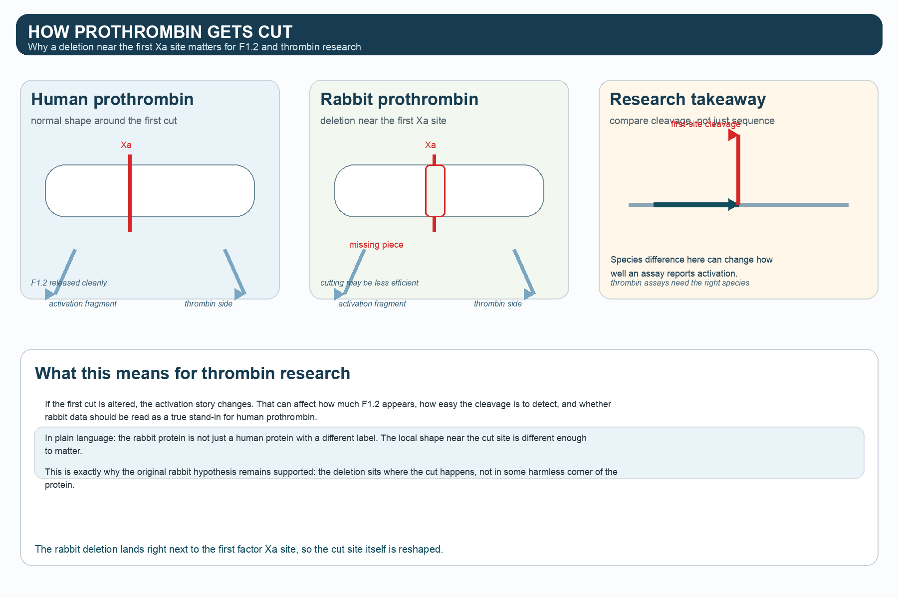
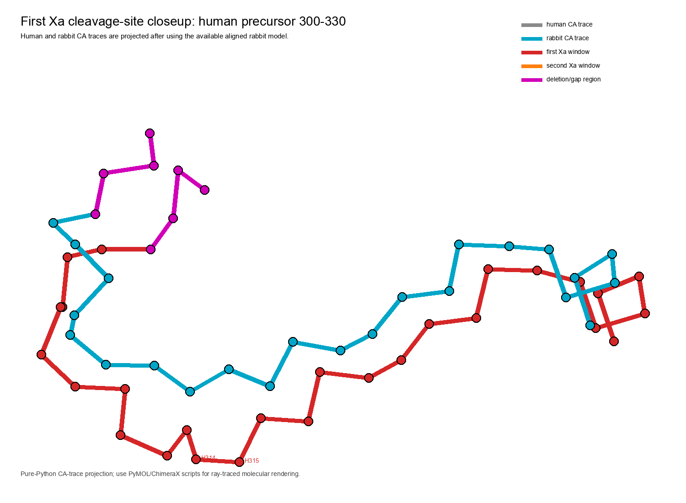
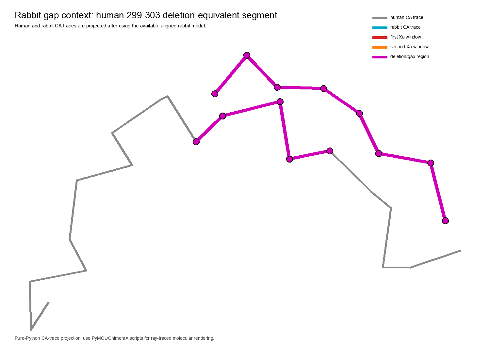

A visual story about a tiny deletion, a big cleavage site, and why rabbit prothrombin is not a drop-in model for the human assay.
HumanP00734
Rabbitloading...
First Xa site314/315
Gap299-303
The short version
Rabbit prothrombin looks close on paper, but the first Xa neighborhood is where the story breaks. The sequence gap is small, yet it lands in the part of the protein that matters most for F1.2 generation and thrombin research.
The site below lets you rotate the AlphaFold rabbit model, switch views, and jump between the first and second cleavage regions.
Why the paper mattered
The old rabbit experiment asked a simple question: can rabbit F1.2 stand in for human F1.2? The answer was no, and the 3D model here shows a plausible reason why.
Rotate the protein
Drag the model, zoom in, and switch modes to compare the human and rabbit structures around the cleavage site.
Interactive 3DAlphaFold-derivedFirst-site focus
Loading interactive molecular view...
How the cut works
Factor Xa trims prothrombin at two places. The first cut is the key one for F1.2. In the rabbit model, the deletion sits right in that neighborhood, so the local architecture is changed where the action starts.
Why it matters for thrombin research
The mechanism graphic and the 3D model tell the same story: if the first cut site shifts shape, the assay output can shift too. That means rabbit data can be useful as a clue, but it should not be read as a direct human substitute.

What could make human easier to cut?
The cards below translate the 3D overlay into plain language. Click one to focus the viewer on the first cleavage region.
Sequence alignment around the first cut
The gap is highlighted in magenta. Click a residue to focus the 3D viewer on that spot.
What the 3D view should make obvious
Evidence trail
The figures and metrics below are the same ones used in the written report, but the site lets you move between them like a story rather than a static paper.


Figures you can open
Click any panel to enlarge it. The gallery includes the new mechanism illustration and the existing 3D renderings.
Bottom line
Rabbit prothrombin is not a direct stand-in for human prothrombin in F1.2 or first-cleavage-site work. The AlphaFold rabbit model makes that difference visible at the exact place the protein gets cut, which is why the original hypothesis holds up.
Static structure does not prove kinetics, but it can show you where the chemistry is likely to change. Here, the shape difference sits right on top of the biological question.